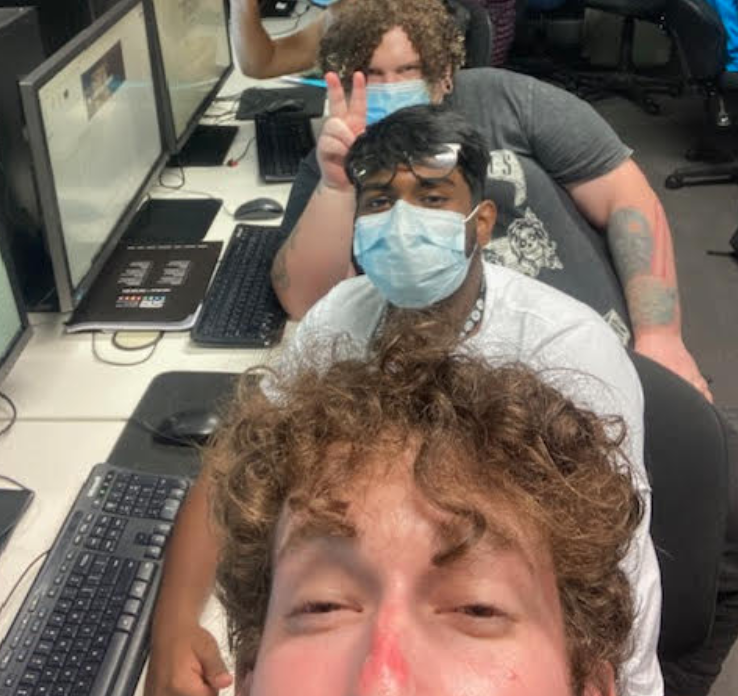
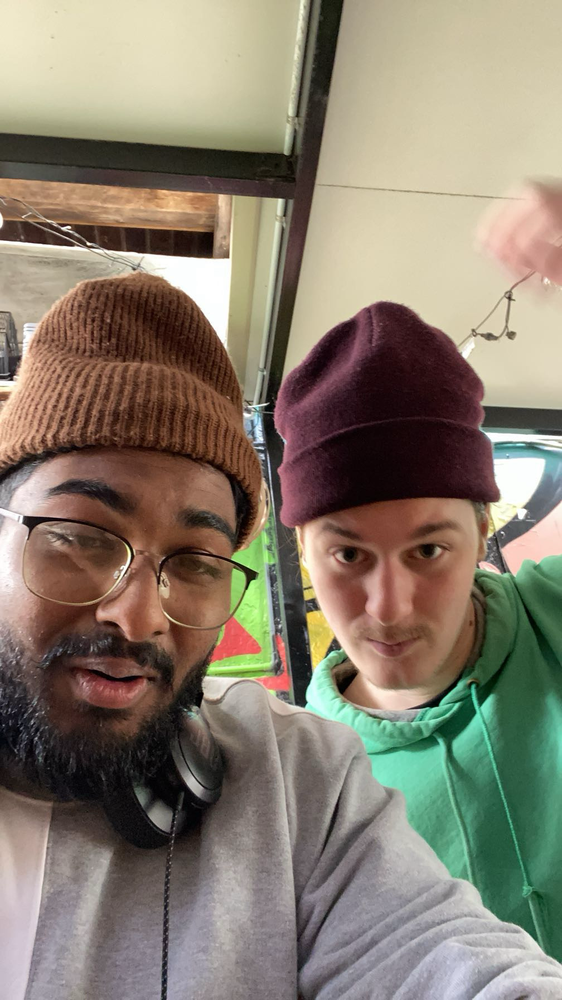
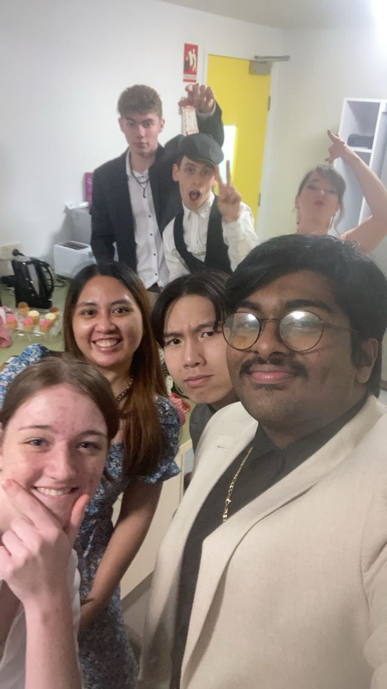

Hello, I'm Kevin Varghese, an up-and-comming game developer with a lifelong passion for games —
not just playing them, but appreciating the craft behind them, the assets, the scripts the passion in each game even bad ones.
That respect and appreciating is what made me closer into development.
I'm adaptable across roles, whether that's documentation, task management, programming support, team or task coordination.
Teamwork is a core strength of mine, I focus and enjoy understanding my teammates' skills and weaknesses so we can deliver the project efficiently,
while always ready to learn and helping others grow.
By the way that image is a link to my Itch.io page that holds all the projects I been apart with
My Games
This gallery showcases the multiple projects I have been apart in ranging
from university projects to Game Jams entries
Hello there, im Kevin Varghese
Im 21 years old with the aim of finishing my Bachelor of Game Design at SAE University College Brisbane
I always had a love for games and even when playng the bad ones I still found the appreciation of the work that goes
behind these. And becoming a developer it definetly strengthened that view.
My favourite Genres being
First Person Shooters
Marvel Rivals, RoboCop: RogueCity, COD
Deep Story games
Ghost of Tsushima, Red Dead Redemtion 1/2
Dark Fantasy - Like Darksouls and seeing the beauty in its dark world
Darksouls, Skyrim enjoying their fantasy worlds
Open world Games
Breath of the wild, Skyrim, Shadow of Mordor
I have met alot of wonderful people, people ranging with different skill sets. These people have shown how their skill
are formed but also used and again allowing me to increase my skill, while having a deeper appreciation for games
and its different elements.



With the different skills and the collaberation of others, the confidence gained
the games will reach a new level of creativity, depth and of course fun. Each project, teaches
me something new, the collaberations with others will keep pushing me forward to reach
the level of entertainment I want.
My Skills
Throughout the gaming journey my skills have improved and has been used in several fields such as
I been placed in a position of management for multiple projects
- Becoming project manger, making timetables, regulating project tasks to make it even and fair for others,
made sure that expectations where made so that game would come out on expected time.
- Made sure if any issues arrived, I would take the responsibility to help the other developers by helping them finalizing their task
ranging from finalizing the project documentation, project scripting or asset creation.
I have been in mutliple positions of programming becomming head programmer, level programmer, Mobile developer
- When becoming head programmer for the game "Endless Summer" I was in charge on the level of scripting making it simple
for the time constraint
- Or becoming level programmer and UI developer for "ChickenClicker",
designing the UI on how the upgrade screen would be placed, or how the chicken reacts with the touch function of the screen
I then have been in mutliple postions of main artist or main designer
- Our recent project "Eclipse Reborn" all the assets ranging from main character, background, visual effects, enemies
and enemy projectile are all hand drawn by me in the drawing software Aseprite.
- Again with "Endless Summer" all the assets from the background, main character and enemies was hand drawn
- I have made some 3D models using Blender such a low-poly characters and low-poly cars
My journey in game development has been designed around the collaberation of ther disciplines, continual learning,
passion for the game and the meaningful player experience. Each project has strengthened my technical abilites and a
deeper understanding on what elements makes a game engageful. As I continue on my journey, my developer goal is to contribite
to well-structured projects while still learning from others who have more experince than me. It will be exciting make future projects
with new creative idea and be in collaberation with new people and teams.
Contact
If you want to have a chat, have a look through my history of game development
or start a collaberation contact me through these: